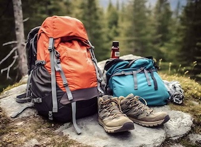

Hiking Essentials for Your Next Adventure
Planning your next hike on the Appalachian Trail? Whether you’re a beginner or an experienced hiker, having the right gear can make or break your adventure. Here are some essential items to pack for a safe and enjoyable hike.
Proper Footwear
Hiking Boots
Investing in quality hiking boots is crucial. Look for boots that offer ankle support, waterproofing, and good traction. Your feet will thank you on rough and muddy trails!
Backpack and Hydration
Hiking Backpack
Choose a backpack that fits comfortably and has enough capacity for all your essentials. Make sure to include a hydration system or water bottles, and aim to carry at least 2 liters of water on any hike.
Navigation Tools
Map and Compass
Even if you’re familiar with the trail, it’s important to carry a map and compass. Consider using a GPS device or a navigation app on your phone, but remember to have a traditional backup in case of dead batteries or no signal.
Weather-Appropriate Clothing
Weather-Appropriate Clothing
Layering is key to staying comfortable on the trail. Start with a moisture-wicking base layer, followed by an insulating mid-layer, and top it off with a waterproof jacket. Don’t forget your hat and gloves if you’re hiking in cooler weather.
Emergency Kit and First Aid
First Aid Kit
Always pack a small emergency kit with essential items like a first-aid kit, whistle, multi-tool, and matches. It’s better to be prepared for any situation that might arise.
Nutrition and Snacks
Trail Snacks
Pack enough snacks to keep your energy up throughout the hike. High-protein snacks like nuts, trail mix, energy bars, and dried fruits are great options. Always carry a little extra, just in case your hike takes longer than planned.
Sun Protection
Sun Protection Gear
The Appalachian Trail offers plenty of open, sunny sections. Protect yourself with sunscreen, a wide-brimmed hat, and sunglasses to avoid sunburn and fatigue.